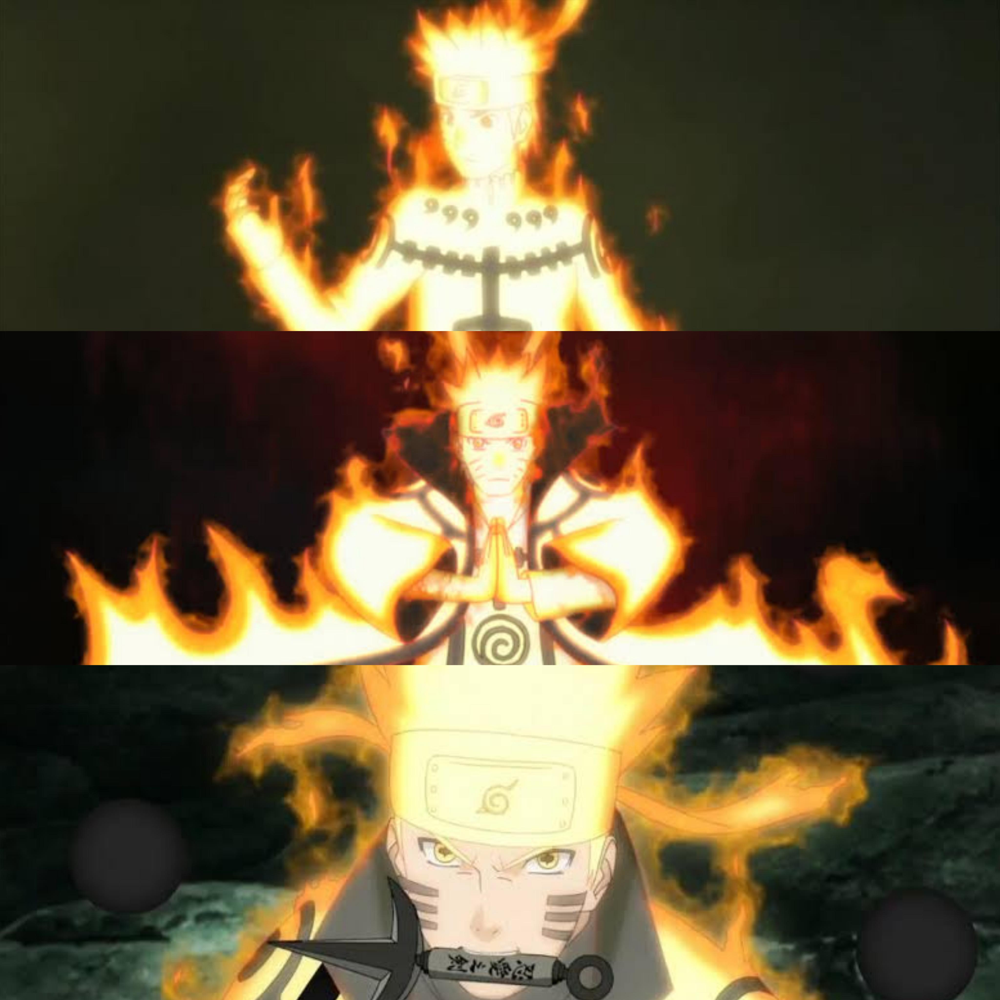

AS NOVE BIJŪS
As Bijūs (Bestas com Cauda) são massas colossais de chakra vivo que habitam o mundo shinobi. Devido ao seu imenso poder destrutivo e reservas inesgotáveis de energia, elas são historicamente caçadas, seladas e usadas como as armas de dissuasão definitivas pelas Grandes Vilas Ocultas.
Selecione uma Besta
Classificação dos Jinchūriki & Modos
Jinchūriki Imperfeito
Estado Inicial: O chakra da besta vaza apenas sob estresse extremo (perigo de morte ou fúria). O corpo é envolvido por uma aura borbulhante e densa de chakra vermelho/colorido. Olhos ganham fendas e o corpo ganha uma camada protetora.
- Progressão de Caudas: A cada 3 turnos sob estresse, uma cauda adicional é liberada
- Risco de Dominação: Ao atingir metade das caudas, risco iminente de dominação total
- Bônus de Atributos: Aumento em 1.2x em todos os atributos
- Regeneração: Recuperação leve de HP por turno
- Durabilidade: Camada protetora reduz dano em 10%
Jinchūriki Semi-Perfeito
Laço de Confiança: Hospedeiros que criaram sintonia com a besta sem treinamento da Ilha Genbu. O ninja assume a forma física completa da besta (tamanho colossal). O chakra se solidifica em pele, garras, presas, asas (se houver) e caudas.
- Bijuus Compatíveis: Isobu, Kokuo, Saiken, Choumei
- Requisitos: 3 anos de posse da Bijuu + 5 cenas narrando a relação
- Força Massiva: Aumento colossal em força e tamanho físico
- Habilidade Única: Acesso ao Bijuu Dama (ataque supremo)
- Resistência Física: Redução de 30% em dano de ataques físicos
- Área de Efeito: Todos os ataques ganham alcance ampliado
Jinchūriki Perfeito

Sintonia Espiritual Total: O ninja e a besta agem como um só. O corpo brilha intensamente com a energia da besta. Padrões de selo místicos aparecem na pele e roupa, mantos de chakra flutuam ao redor do corpo. É o ápice do controle e poder combinado.
- Requisitos: Treinamento na Ilha Genbu
- Bônus de Chakra: Adicional fixo (confira tabela abaixo)
- Velocidade Extrema: Reflexos e velocidade sobre-humanos
- Defesa Chakra: Imunidade a ataques não-jutsu (apenas chakra penetra)
- Sensibilidade: Detecta presença de chakra em raio amplo
- Capacidade Máxima: Domínio pleno de todos os modos
Bônus de Chakra e Kekkei Genkai
Ao ativar o Modo Chakra, o hospedeiro soma o valor abaixo à sua reserva total. Caso o chakra zere, a Bijuu regenera 10% do total da reserva por turno de descanso.
| Bijuu | Chakra Extra (Modo Chakra) | Kekkei Genkai Nativa | Nível de Força |
|---|---|---|---|
| Kurama | 80.000 | Chakra Massivo | Alpha |
| Gyūki | 50.000 | Nenhum | Alpha |
| Son Gokū | 40.000 | Liberação de Lava (Yōton) | Alpha |
| Kokuō | 30.000 | Liberação de Fervura (Futton) | Alpha |
| Shukaku | 15.000 | Liberação de Areia (Suna) | Alpha |
| Isobu | 25.000 | Nenhum | Beta |
| Chōmei | 20.000 | Nenhum | Beta |
| Matatabi | 22.000 | Nenhum | Beta |
| Saiken | 18.000 | Nenhum | Beta |
Nível Alpha (Bijuu Dama): Capaz de repelir ou arremessar uma Bijuu Dama inimiga.
Nível Beta (Redução): Consegue segurar ou reduzir dano pela metade ao ser atingido por Bijuu Dama.
Vida de um Jinchūriki: Fardo e Risco
O Fardo Político, Pessoal e Risco de Morte
- Arma Suprema da Vila: Você será considerado a arma suprema da sua aldeia. Seu valor militar é incalculável e seus movimentos são monitorados constantemente pelos líderes.
- Restrições de Movimento: Kages geralmente restringem a saída de Jinchūrikis da vila sem escolta pesada, pois perdê-los é o mesmo que perder uma guerra de antemão.
- Alvo Vivo Permanente: A partir do momento do selamento, seu personagem vira um alvo vivo para organizações mercenárias, nukenins e células criminosas interessadas em roubar o poder da besta.
- Isolamento Social: Mesmo dentro da vila, você pode enfrentar medo, desconfiança ou rejeição de cidadãos comuns que temem sua besta interior.
- RISCO ABSOLUTO DE MORTE: Se a Besta com Cauda for extraída do seu corpo por qualquer meio, sem exceções e sem possibilidade de salvação, seu personagem morrerá imediatamente. Não há técnicas, jutsos, itens ou qualquer outro artifício que impeça essa morte. A extração é sentença de morte instantânea do hospedeiro.